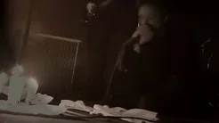
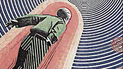
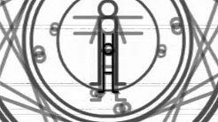

Свет
Тьма

кАин и Panzerfaust - Мерцание | Записано в 2006г. Сведено в 2016г. Видеоряд с выступления в клубе Piranhas & Revolvers г.Полоцк 2006г.
218 просмотров

кАин - Этой Ночью | Концептуальный клип, созданный из плакатов и иллюстраций СССР, на композицию "Этой Ночью" из альбома "Вирус Страха" 2012г. кАин - Этой Ночью
758 просмотров

кАин - Боли Узоры | Клип к песне "Боли Узоры" из альбома "Потерянный Свет" 2006 года.
216 просмотров
Загрузить еще